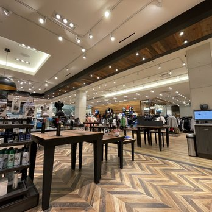

Welcome to threads&terrain, where adventure meets comfort. We're a leading Canadian fashion and sports retailer. We offer the best in outdoor apparel and fashion, footwear, equipment and accessories for men, women and kids. Since 2010, we've been committed to providing our customers and their families with the best possible service—and we are continuously working to improve every day.
Living an active is invigorating, fun and satisfying. It's ski, après-ski and everything in between. It's beach time with the kids or spin class at the studio. It's perfecting your golf swing or riding your bike through Canada's nature trails and beautiful scenic roads. It's hiking the trails through the Rockies in Alberta or lounging on a boat in Muskoka.
It all began with a shared passion for the outdoors and the desire to create high-quality gear that could keep up with our adventures. In 2010, our founders embarked on a journey to bridge the gap between performance and style in outdoor apparel. They envisioned a brand that would allow you to seamlessly transition from the trail to the town without sacrificing comfort, performance, or aesthetics. threads&terrain was born from this vision.
At threads&terrain, we believe in a world where everyone can experience the joy of the great outdoors. We understand that nature is both an escape and an inspiration, a place to challenge your limits and find peace all at once. Our products are designed to empower you on this journey, combining cutting-edge technology, sustainable materials, and stylish design.
Quality is at the core of everything we do. Our gear is engineered to endure the harshest conditions, ensuring that you're always prepared for your next adventure. We're also deeply committed to sustainability, striving to minimize our environmental footprint. We use eco-friendly materials and ethical manufacturing processes, all while creating products that stand the test of time.
What sets us apart is our dedication to understanding your needs. We are adventurers, hikers, runners, and nature enthusiasts ourselves. We've been there, done that, and designed the gear that works for us. Our products are a reflection of the trials, tribulations, and triumphs we've experienced in the great outdoors.
If you have any questions, feedback, or need assistance, please don't hesitate to get in touch with our dedicated customer support team. Your satisfaction is our top priority.
Live, explore, and embrace the outdoors with threads&terrain.